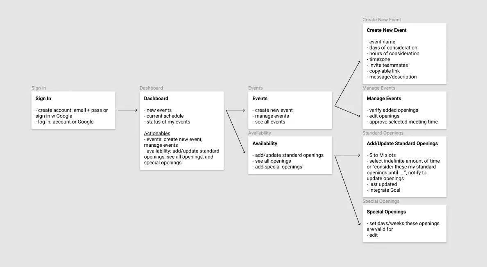
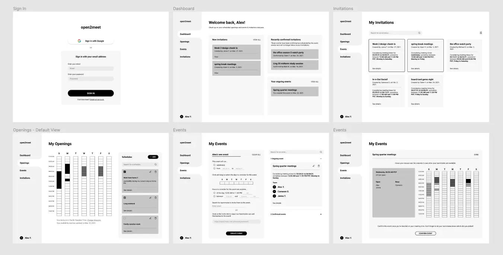
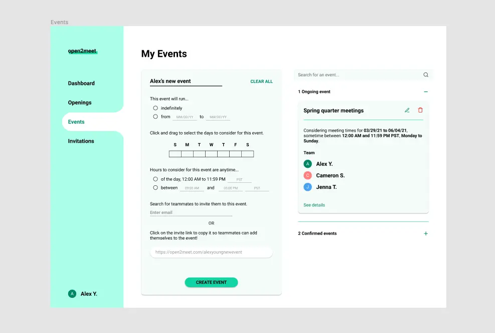
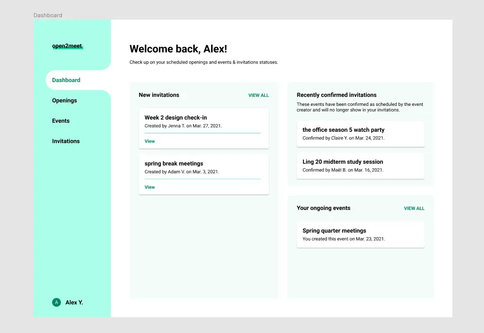
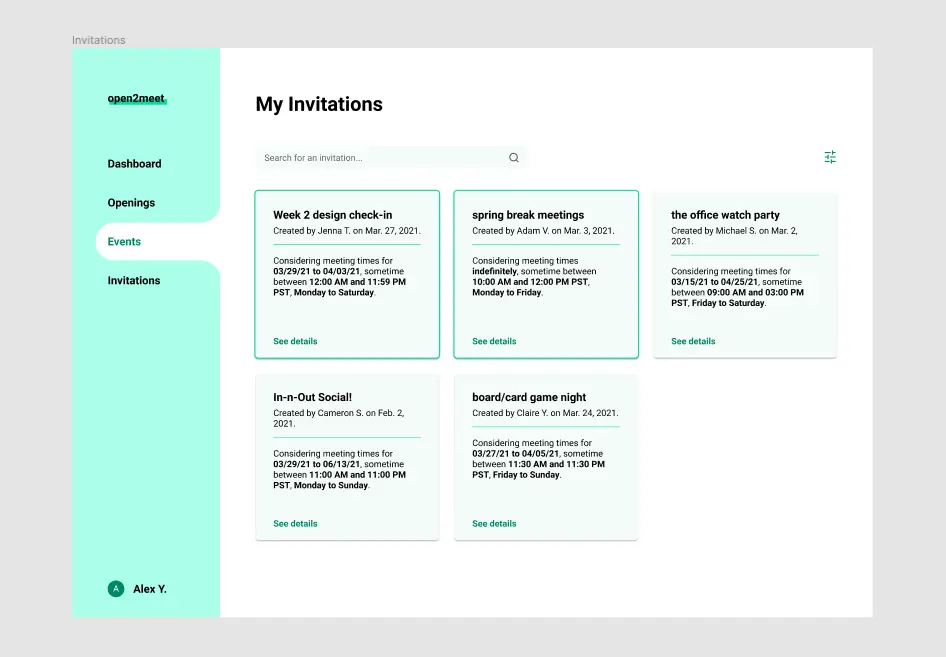
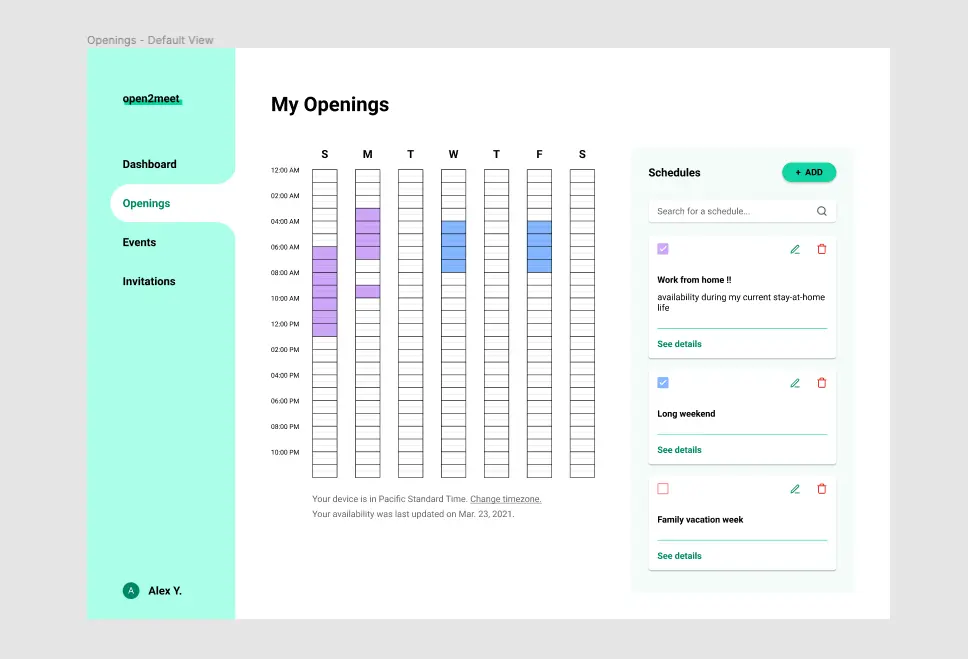
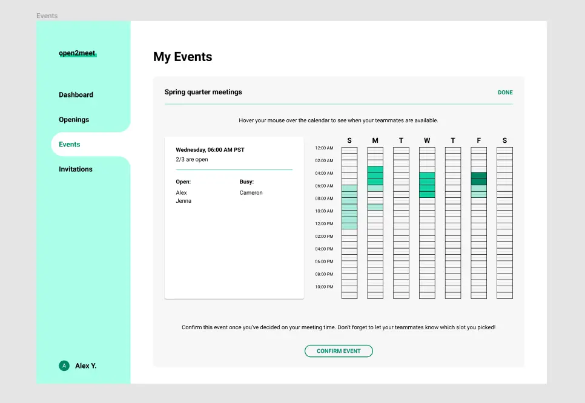

sketching a better scheduling platform
overview
Looking for something to do during spring break in 2021, I spent a week doing a concept expansion of when2meet, an event scheduling platform popular for setting up college club meetings and virtual socials.
problem
A teammate of mine recently raised a good point about when2meet: While the website makes scheduling for large teams pretty easy, it doesn't make you create an account and so doesn't ever save your availability. This means you often find yourself painstakingly inputting the same schedule over and over for separate events. Is it possible to reduce this friction and make schedule coordination even easier?
part 1: information architecture
To plan what I called "open2meet", I sketched and did information architecture. The main idea was to have users create accounts to access 3 functions: filling in & saving your availability, creating events & adding teammates' saved schedules, and viewing events your availability was added to.
With schedules being saved to an account, users would only have to fill in their availability once (though they could edit it anytime) and event hosts would have access to everyone's availabilities when creating an event.
part 2: the information challenge
When I started on low-fidelity wireframes, I realized that a big challenge was the amount of information that needed to be presented concisely (of course, scheduling requires the alignment of many different data points from people's lives). I strived to make essential actions as "out in the open" as possible.
For instance, the template for creating a new event is open and ready to be filled out once a user clicks on the "Events" tab - no need to look around for a "Create new" button. In the template, all information needed for an event is presented as if it were a survey, guiding the user step-by-step through the planning process.
To further break down the information load, I chose to include a dashboard to catch users up on their most time sensitive actions and updates, at-a-glance: latest additions to an event, recently scheduled events, and remaining unscheduled events. The dashboard also serves as a sort of GPS, routing the user to different parts of the web app.
In other places, I played with expansion (e.g. "see details") to help make the information load more digestible. The goal was for only the most essential details to be constantly visible, but to assure the user that everything else was still there too.
I made intensive use of card components, which makes it easy for the eye to quickly distinguish and find different events. I also was largely inspired by when2meet to use color and opacity to allow the layering of different schedules and show intensity of availability (i.e., whether more or less people are free during a certain time slot). In fact, I decided to recycle their iconic green and put my own twist on it, tweaking its hue and saturation.
  conclusion
I still have questions and thoughts about open2meet as a product, many of which I might use as user research points were I to extend this project. Does having users create an account defeat the attractiveness of when2meet's convenience and accessibility? What happens when not all teammates have an open2meet account? Is the convenience of saving your availability compelling enough for users to convince all their teammates to create open2meet accounts? etc..
open2meet was a nice chance for me to practice thinking through how to add to an already existing concept. I was able to play around with visual design as well - an area I'm still looking for more practice in!
back to homepage